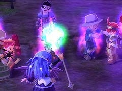

目次 > ゲームについて > 日本Falcom 攻略 > ZWEI II > 攻略チャート > 星降りの里のイベントまで
らんの眼
ZWEI II (ツヴァイ 2、ZWEI II Plus)
| 概要 | 情報 | 攻略チャート |
| フード交換 | ペットについて | ボス戦 |
| 敵キャラ一覧 | ハンターランク | G-コロッセオ |
| アイテム一覧 | ガジェット一覧 | トレジャー一覧 |
| ダンジョン一覧 | クリアデータ特典 | Plusの追加要素 |
| ZWEI II攻略へ | 目次へ戻る |
| [ ～オルディウム神殿ボス ] [ ～アウロン大鉄塔ボス ] [ ～星降りの里 ] [ ～エンディング ] |
| ムーンブリア城まで |
| アルッテの町でのフィオナとのイベント ロアルタ村でのイベント 村人をフックギアでアルウェンの側まで動かす  ムーンブリア城出現イベント ムーンブリア城へ 「庭園墓地(LV.13)」を突破し、奥でモンブラン戦 「地下水牢(LV.13)」を突破し、奥でテルミドール戦 「城館区画(LV.13)」を突破し、奥でダイガルド戦 それぞれボス戦後、出てくるオブジェクトを「調べ」、「礼拝堂(LV.15)」への道を開く 「礼拝堂(LV.15)」を突破し、奥でザハールとのイベント ルナ＝ムンドゥスのイベント フィオナの屋敷でのイベント (おまけ) 「G-コロッセオ」の扉前にいる「呼び込みペンギン」が「ピザ」をくれる オルディウム神殿の「神殿・中盤(LV.1 奥)」で妖精のイベント ムーンブリア城「礼拝堂(LV.15)」へ行けるようになってから、ロアルタ村へ行くと超人ギャランドゥとのイベント アウロン大鉄塔の「未来研究楼(LV.13)」の奥でギャランドゥから奥義を教わる |
| 星降りの里のイベントまで |
| ムランデーヶ丘の飛行機を調べる アルッテ飛行場のミリアムに話しかけ、「工具セット」を借りる ブランデーヶ丘の飛行機を調べる スバルとのイベント (おまけ) 金闇の森でオデッサとのイベント クリスタルバレーで妖精のイベント アネットの店で魔女ラーライラとのイベント ペットショップでピピロ、ポックルとのイベント セクンドゥム廃坑でギャランドゥとのイベント 星ヶ峰のお地蔵様の顔を全て正面に向ける 「忍びの修行場(LV.17)」を突破 カイとのイベント テンザンとのイベント 星降りの里の村人全員に話しかける 温泉へ行く スバルとのイベント テンザンのイベント モンブランのイベント |
| [ ～オルディウム神殿ボス ] [ ～アウロン大鉄塔ボス ] [ ～星降りの里 ] [ ～エンディング ] |
| 概要 | 情報 | 攻略チャート |
| フード交換 | ペットについて | ボス戦 |
| 敵キャラ一覧 | ハンターランク | G-コロッセオ |
| アイテム一覧 | ガジェット一覧 | トレジャー一覧 |
| ダンジョン一覧 | クリアデータ特典 | Plusの追加要素 |
| ページの上部へ | ZWEI II 攻略へ | 目次へ戻る |